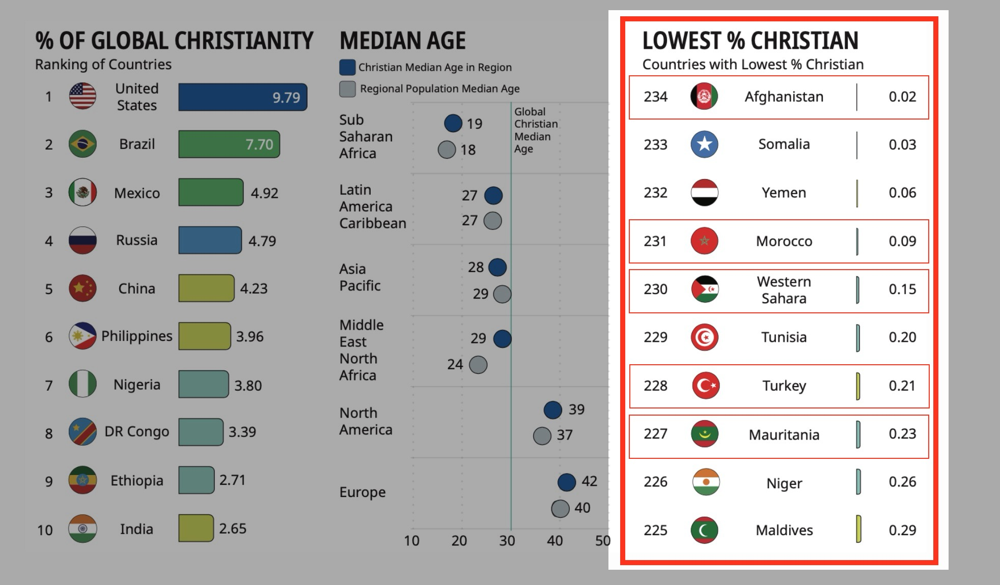
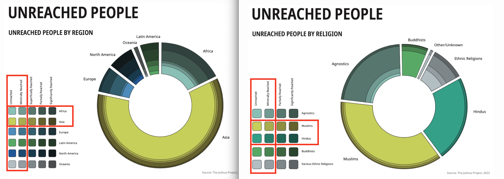
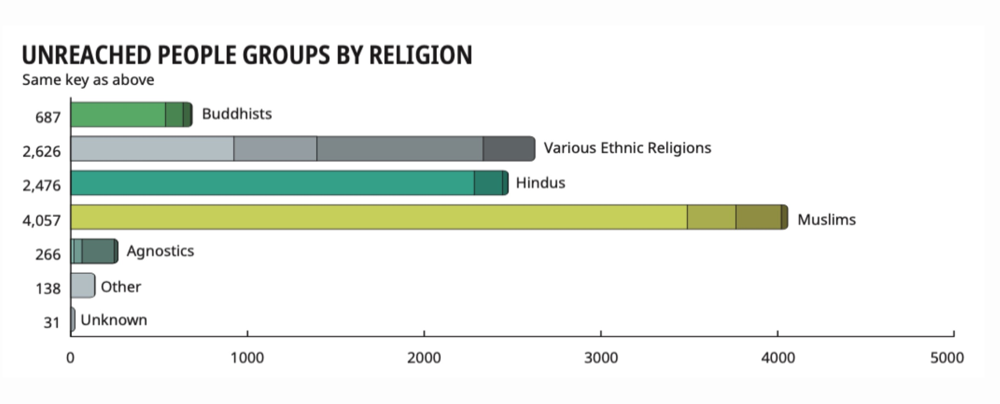
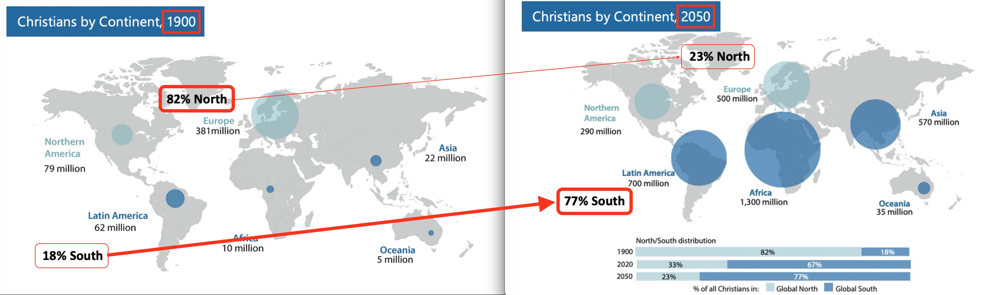
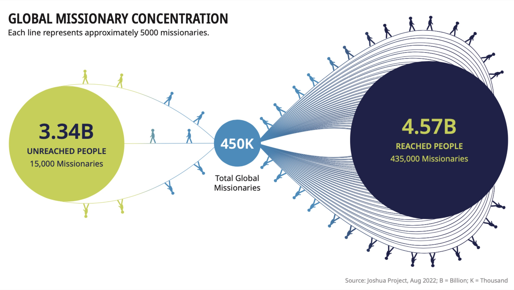
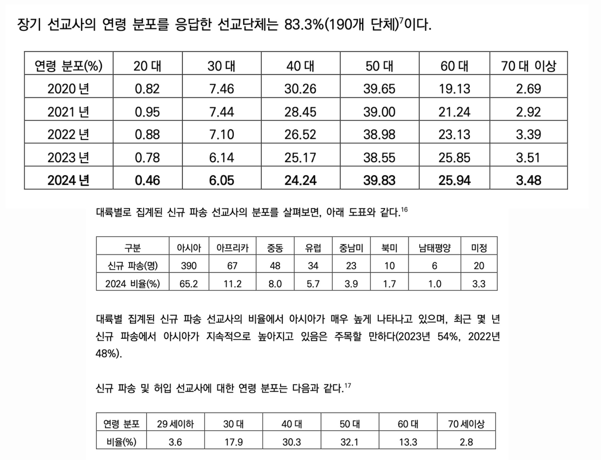
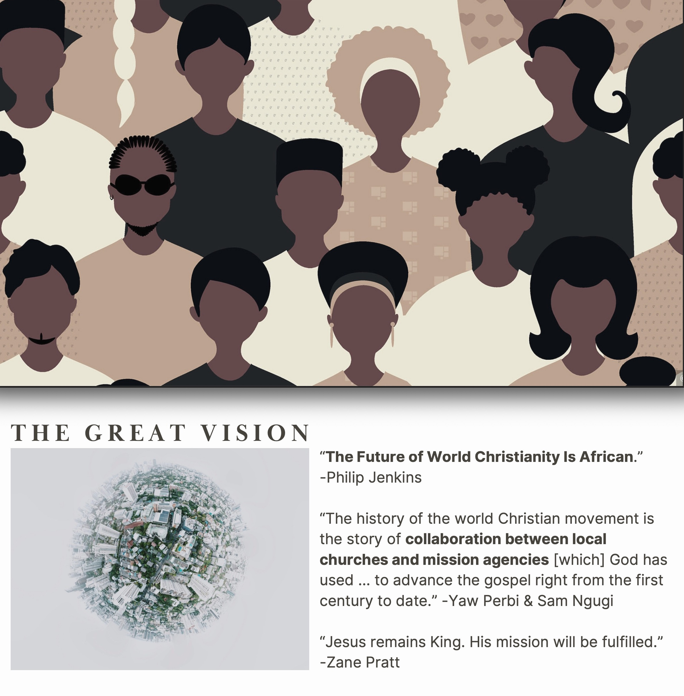

세계 선교 동향
복음화율이 낮은 지역과 미전도 종족에게 집중적인 접근이 필요하며, 전 세계 교회가 참여하는 다중심적이고 포용적인 선교 전략으로 선교 자원과 선교사의 파송의 재조정이 요구됩니다.
세계 선교 현황
1. 예수님의 지상 대명령 (The Great Commission)
예수께서 나아와 말씀하여 이르시되 하늘과 땅의 모든 권세를 내게 주셨으니 그러므로 너희는 가서 모든 민족을 제자로 삼아 아버지와 아들과 성령의 이름으로 세례를 베풀고 내가 너희에게 분부한 모든 것을 가르쳐 지키게 하라 볼지어다 내가 세상 끝날까지 너희와 항상 함께 있으리라 하시니라 - 마태복음 28:18-20
- 가서: 아직도 복음을 들을 기회조차 없는 사람들(미전도 종족) 이 세계 인구의 약 40% (33억 명)
- 모든 민족을 제자로 삼아: 언어, 문화, 종교를 공유하는 집단(종족) 단위로 예수님의 가르침으로 제자화
- 세례를 베풀고 가르켜 지키게 하라: 그리스도와의 연합, 삶의 변화, 공동체 형성, 지속적인 양육 필요
위의 모든 요소(가서 → 제자 삼고 → 세례 주고 → 가르쳐 지키게 함)는 단순한 “전도”나 “이벤트”로는 불가능하고, 반드시 공동체로 세워지는 교회가 필요. 선교는 단순한 복음 전도가 아니라 현지에 지역교회를 세우는 교회 개척 (Church Planting) 임
👉 선교는 교회 개척이다 ✝️
2. 세계 기독교 현황
복음화율이 낮은 국가에 관심과 노력이 필요: 선교 자원(선교사, 재정, 기도)의 재배치가 요구됨 
개신교 중심의 시야를 벗어나, 더 넓고 포용적인 신학적 시야 필요 🌍
- 신학적 중심은 분명하되, 선교적 적용에서는 열린 태도를 갖는 것
- 신학의 기본 진리(복음, 삼위일체, 성육신 등) 는 분명하게 지키며, 다양한 교파(정교회, 가톨릭, 오순절 등)들과 협력
- 지금은 다양한 문화간의 상호 선교 시대이므로, 교파보다 복음을 어떻게 증거할 것인가가 더 중요
- 신학의 확장과 균형
- 개신교의 복음 중심, 성경의 권위 기반위에, 가톨릭의 사회적 실천, 정교회의 영성, 오순절의 성령 이해 등을 상호 존중하고 이해하려는 신학적 포용력이 필요

오늘날 약 17,000 종족 중 약 7,000 종족(약 40%) (주로
이슬람, 힌두교, 불교, 무속 중심) 이 여전히 복음을 듣지 못한 상태
➡️ 아직 한 번도 예수님의 이름조차 들어보지 못한 종족들을 향한
의식적이고 집중적인 접근 필요  
3. 세계 기독교 성장
- 명령은 불변(不變), 상황은 만변(萬變): 하나님의 명령은 시대를 초월해 항상 유효하지만, 그것을 실천하기 위해서는 상황의 변화에 민감하게 반응해야 함
- 우리는 시대의 변화에 맞도록 선교를 관찰, 분석하여 전략에 맞추어 진행을 하지만, 하나님의 일하심은 우리의 예상을 초월하심을 명심
- 인구증가 속도 > 복음화 속도
- 미전도 지역(아프리카, 남아시아, 중동 등)에서의 빠른 인구 증가 속도에 발맞추어 복음화의 전략적인 집중과 투자가 필요
- 복음주의는 10% 미만
- 복음주의(Evangelical)란 복음 중심의 회심, 성경의 권위, 십자가 중심의 구속 신앙을 일컬음
- 세상에는 “기독교 문화권”은 넓지만, 진정한 복음 중심의 신앙을 가진 사람은 소수
- 양적인 성장을 넘어, 질적인 성장, 즉 복음 중심의 회심과 지속적인 제자화 훈련 및 양육 필요

4. 세계 선교사 파송 현황
- 과거의 선교는 주로 서구(북미, 유럽) 에서 비서구권(아시아, 아프리카, 라틴아메리카) 으로 복음을 보내는 단일 중심적(Monocentric) 구조였으나, 이제는 다중심적인(Polycentric) 구조로 바뀌어감
- 광범위한 선교관 필요: 문화간 선교(Cross-cultural Mission), 난민 선교(Refugee Mission), 도시 선교(Urban Mission), 직업 선교 (Business as Mission - BAM), 디지털 선교(Digital Mission) 등등
| 구분 | 전통적 선교 (Monocentric Mission) | 폴리센트릭 선교 (Polycentric Mission) |
|---|---|---|
| 중심 | 서구 (유럽, 북미 중심) | 다수의 중심 (전 세계 교회) |
| 방향 | 서구 → 비서구 | 모든 나라 → 모든 나라 |
| 특징 | 단일문화 중심, 개척 선교 | 다문화 이해, 협력 선교, 통전적 접근 |
| 표어 | "서구에서 세계로" | "온 열방에서 온 열방으로" |
- 대부분의 선교사들이 이미 복음이 들어간 지역으로 지속적으로 파송되고 있음 🤦♂️
- 전체 선교사의 약 3%만이 아직 복음을 한 번도 들어보지 못한 미전도 종족(UPG) (세계 인구의 약40%) 에게 파송되고 있음 😢
- 선교사 파송의 재조정 필요 🔄
- 하나님 나라의 관점에서 ‘선교사가 제일 필요한 지역’ 을 기준으로 파송을 재조정해야 함

5. 한국 기독교 및 선교사 파송 현황
선교사 고령화 👴👵 (선교사 평균 연령 53.9세) 및 아시아 파송 집중화 (2024년 신규파송 65% 아시아로) 가 지속됨
| 현황 | 대응방안 | 선교전략 |
|---|---|---|
| 20~30대 선교사 비율이 낮아지고 있으므로, 청년층의 선교 참여 필요 | 젊은 세대 선교사 동원 | 선교적 교육부 |
| 은퇴 선교사들의 경험과 지혜를 활용할 수 있는 방안 모색 및 은퇴 후 지원 필요 | 은퇴 선교사 지원 체계 | 파송 선교사를 향한 교회의 책무 |
| 아시아 지역에 편중된 파송을 재조정하고, 균형 잡힌 선교 파송 및 전략 수립 필요 | 선교 지역의 다양화 | 선교 단체와의 협력 |

6. 미국 기독교 현황
7. 해석과 적용 (The Great Vision)
지상 대명령 (The Great Commission) 을 실현하는 선교 대계획 (The Great Vision) 수립
"세계 기독교의 미래는 아프리카에 있다" - 필립 젠킨스(Philip Jenkins)
"1세기부터 지금까지 세계 선교의 중심에는, 지역 교회(local churches)
와 선교 단체(mission agencies)의 협력이 있어왔다." - Yaw Perbi & Sam
Ngugi
"예수님은 여전히 왕이시다. 그분의 선교는 반드시 성취될 것이다." –
제인 프랫 (Zane Pratt)
"세계 기독교의 미래는 아프리카에 있다" - 필립 젠킨스(Philip Jenkins)
"1세기부터 지금까지 세계 선교의 중심에는, 지역 교회(local churches) 와 선교 단체(mission agencies)의 협력이 있어왔다." - Yaw Perbi & Sam Ngugi
"예수님은 여전히 왕이시다. 그분의 선교는 반드시 성취될 것이다." – 제인 프랫 (Zane Pratt)
